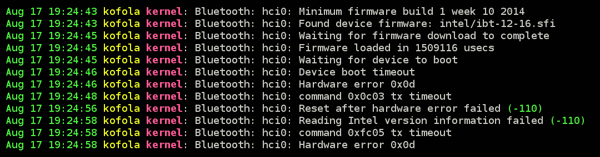
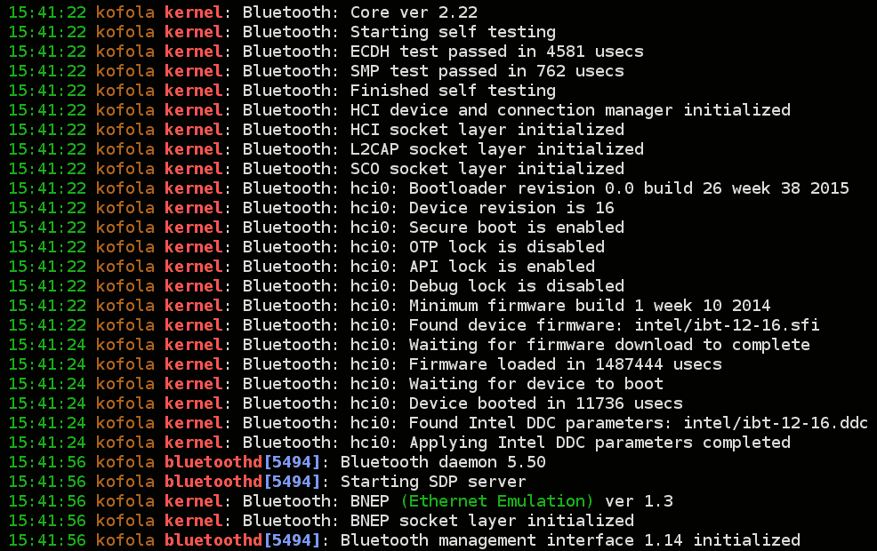

Upgrade wifi Thinkpadu T420 na Intel 8265
Často som mal problémy s kvalitou signálu na mojom staručkom thinkpade T420. Rozhodol som sa to riešiť výmenou wifi modulu a podľa možnosti som chcel čo najnovší wifi modul od intelu. Nakoniec som skončil u šmejdu s osnzčením IT-8265HMW-B.
Na začiatok sa pozrieme trochu na zúbok decibelom. Tí, ktorí majú teoretické znalosti môžu kľudne nasledujúcu sekciu preskočiť.
Čo je to decibel?
Decibel je bezrozmerná logaritmická jednotka udávajúca pomer určitej veličiny voči referenčnej hodnote. V prípade zvuku je napríklad referenčnou hodnotou zhruba 20 μPa (hranica počuteľného zvuku u mladých ľudí, ktorí nemajú poškodený sluch).
Pri wifi sa zvyčajne ako referenčná hodnota používa výkon 1mW (1 tisícina watu). Bežne je výkon označený ako (číslo) dBm (decibel miliwat).
Výpočet absolútnej hodnoty z relatívnej hodnoty v dB je veľmi jednoduchý: absolútna hodnota = referenčná hodnota * 10(db/10).
Príklad: Máme výkon 10dBm. Referenčná honota je 0.001W. Výsledný výkon je 0.001W * 1010/10 = 0.001W * 101 = 0.01W.
Hodnota 10dB znamená 10-násobok referenčnej hodnoty, 20dB znamená 100-násobok, 30dB znamená 1000-násobok atď. Na opačnej strane máme -10dB (desatina), -20dB (stotina) atď.
Z absolútnej hodnoty dostaneme hodnotu v decibeloch vzorcom 10 * log(absolútna hotnota / referenčná hodnota).
Prečo sa používajú decibely
Veľkou výhodou použitia decibelov je možnosť vyjadriť veľké rozsahy veličiny bez nutnosti používať veľký počet desatinných miest na jednej strane stupnice, alebo núl na druhej strane. V prípade wifi sa bežne môžme stretnúť s hodnotami od -100dBm (0.0000000000001W) po 40dBm (10W). Pri takom počte desatinných miest sa môže človek veľmi ľahko pomýliť.
Ďalšou veľkou výhodou použitia decibelov je jednoduchý výpočet strát / ziskov. Príklad:
Máme vysielač s výkonom 1W (30dBm), prijímač s citlivosťou 0.00000000001W (-80dBm), prívodné vodiče k anténe prijímača aj vysielača so stratami 68.4% (-5dB). Vysielač má obyčajnú všesmerovú anténu (0dB) a prijímač má anténu s 10-násobným ziskom oproti všesmerovej anténe (10dB). Straty na ceste budú 10000000000-násobné (100dB). Bude prijímač schopný prijať signál ak zanedbáme šum?
S absolútnymi hodnotami bude výpočet výsledného výkonu na strane prijímača vyzerať nasledovne:
1W * (100-68.4)/100 * 1/10000000000 * (100-68.4)/100 * 10 = 0.0000000001W
Ak som sa niekde nepomýlil mal by výkon a antény postačovať na prijímanie signálu. Pri výpočte výsledného výkonu nám stačilo vynásobiť jednotlivé straty / zisky signálu. Medzivýsledky a aj samotný výsledok však vyzerá hrozne a človek sa pri tých nulách ľahko pomýli. Existuje však aj jednoduchší spôsob. Využijeme k tomu jednu vlastnosť logaritmov.
log(a*b) = log(a) + log(b)
Ten istý výpočet s použitím decibelov:
30dBm -5dB - 100dB - 5dB + 10dB = -70dBm
To je 10-násobne viacej než citlivosť prijímača.
Prevodová tabuľka medzi dBm a mW
| Hodnota dBm | Hodnota mW |
|---|---|
| -100 dBm | 0,0000000001 mW |
| -90 dBm | 0,000000001 mW |
| -80 dBm | 0,00000001 mW |
| -70 dBm | 0,0000001 mW |
| -60 dBm | 0,000001 mW |
| -50 dBm | 0,00001 mW |
| -40 dBm | 0,0001 mW |
| -30 dBm | 0,001 mW |
| -20 dBm | 0,01 mW |
| -10 dBm | 0,1 mW |
| 0 dBm | 1 mW |
| 1 dBm | 1,3 mW |
| 2 dBm | 1,6 mW |
| 3 dBm | 2 mW |
| 4 dBm | 2,5 mW |
| 5 dBm | 3,2 mW |
| 6 dBm | 4 mW |
| 7 dBm | 5 mW |
| 8 dBm | 6,3 mW |
| 9 dBm | 8 mW |
| 10 dBm | 10 mW |
| 11 dBm | 12,6 mW |
| 12 dBm | 15,8 mW |
| 13 dBm | 20 mW |
| 14 dBm | 25 mW |
| 15 dBm | 32 mW |
| 16 dBm | 40 mW |
| 17 dBm | 50 mW |
| 18 dBm | 63 mW |
| 19 dBm | 79 mW |
| 20 dBm | 100 mW |
| 21 dBm | 126 mW |
| 22 dBm | 158 mW |
| 23 dBm | 200 mW |
| 24 dBm | 251 mW |
| 25 dBm | 316 mW |
| 26 dBm | 398 mW |
| 27 dBm | 501 mW |
| 28 dBm | 630 mW |
| 29 dBm | 794 mW |
| 30 dBm | 1000 mW |
Možnosti upgradu
V mojom notebooku bola pôvodná karta Intel 6205. Maximálny výkon tejto karty je 15dBm (32mW). To mi robí dosť veľké starosti pretože zvyčajne chytím celkom slušný signál routra, ale komunikovať nemôžem pretože router nezachytí môj signál.
Pred výmenou karty sa musí naflashovať nový BIOS s odstraáneným whitelistom. Bez odstránenia whitelistu je možné vymeniť kartu len za kartu, ktorá sa používala v tom istom modeli thinkpadu.
Aké sú teda možnosti po úprave BIOSu? Prekvapujúco malé. Poslednou wifi kartou pre Mini PCIE half od intelu je 7260HMW z roku 2012 (dnes sa už nevyrába). Ostatní výrobcovia na tom sú podobne. Intel navyše neposkytuje samotný chipset, takže ani keby sa našiel výrobca ochotný vyrobiť novú kartu do Mini PCIE tak vlastne nemôže.
Redukcia z nových kariet M2 do PCIE je pomerne triviálna keďže M2 je väčšinou len iná forma PCIE. Redukcia však potrebuje dlhý slot. Thinkpad má len polovičný, takže tadiaľ cesta nevedie.
Tu vstupuje do hry náš hlavný hrdina - firma IdeaTrust Technology Solutions. Firma, ktorá nemá ani vlastnú webovú stránku, ale predáva nové intelácke wifi karty do Mini PCIE. Ako sa im to podarilo?
Intel vyrába v súčasnosti karty prevažne v 2 formách. V štandardnej (M.2 2230) a vo forme SMD (M.2 1216), ktorá je výrazne menšia než Mini PCIE Half.
Na obrázku je karta vyrábaná vyššie spomenutou firmou s odstráneným plechovým krytom. Pod krytom sa skrýva malá kartička, ktorá má vlastné konektory na anténu (typ MHF4) pripojené vo vnútri koaxiálom na plôšky A1/A2. Vonku sú vyvedené konektory u.FL/IPEX. V recenziách som našiel, že práve toto prepojenie je katastrofálne a hneď po zakúpení by som mal dať dole kryt, odpojiť vnútorné konektory a pripojiť anténu priamo, alebo cez redukciu na tú malú vnútornú kartičku. Ja som sa rozhodol pred touto možnosťou vyskúšať výkon bez úprav.
Balenie
Z aliexpresu som teda kúpil kartu IT-8265HMW-B. Karta stála 16€. Vo vnútri je Intel 8265 s bluetooth 4.2. Balíček prišiel sa necelá 2 týždne. Katastrofálne zabalený v zmačkanej krabičke, ktorá už zažila lepšie časy. Vo vnútri bola wifi karta zabalená v antistatickom obale a obalená bublinkovou fóliou. Sledovanie zásielky výnimočne fungovalo skvele.
Inštalácia
Po výmene bola karta automaticky rozpoznaná. Samozrejme BIOS musel byť pred výmenou upravený aby vôbec notebook nabootoval. Bluetooth časť nebola rozpoznaná vôbec.
Oprava bluetooth bola pomerne triviálna. Stačilo zobrať lepiacu pásku a zalepiť pin 51 na PCIE konektore (na obrázku v prednej časti úplne vpravo). Tento pin slúžin na karte ako rfkill a v thinkpade je napevno uzemnený, takže bluetooth časť je permanentne vypnutá. Ak sa pin izoluje bluetooth by mala normálne fungovať. Mala ...
Aby systém začal vidieť bluetooth je potrebné v BIOSe povoliť wlan. Po reštarte už systém normálne videl bluetooth časť ako nové USB zariadenie. Nové nefunkčné USB zariadenie ;)
S týmto problémom som dlho bojoval kým som neskúsil vypnúť quic boot v BIOSe. Po vypnutí začala bluetooth zázračne fungovať. Po aktivácii quick bootu zostáva fungovať.
Okrem toho LED bluetooth a wifi zostali nefunkčné. Bluetoth pretože je pripojená na iný port a wifi pretože karta nemá vyvedený signál na pine 44.
Benchmarky
Maximálny výkon novej karty je 22dBm (158mW), teda 5-krát vyšší než stará karta. Zároveň však má pomerne vysoký útlm hlavne v pásme 5GHz. V nasledujúcich grafoch sú výsledky iperf3 v rovnakej polohe (testy boli vykonané hneď pred a po výmene karty, s notebookom sa medzitým nehýbalo a pri všetkých textoch bol notebook čiastočne rozobratý). Ako router bol použitý Huawei B2338-168. Mezi routrom a notebookom bola nejaká tá stena, pár menších prekážok a asi 5 metrov vzduchu.
Na testovanie záťaže som používal program iperf3, konkrétne nasledujúci príkaz (prepínač -R znamená download). Zároveň som kontroloval úroveň signálu z /proc/net/wireless. Skript pre záznam dát a transformáciu dát do csv prikladám k blogu.
iperf3 -c 192.168.1.3 -Z [-R] -t 60 -i 0.5 -J --logfile stats.json
Ako server som používal starší thinkpad pripojený káblom priamo k routru. Teoreticky zvláda odosielať / prijímať dáta rýchlosťou 600Mbit/s. Novšie notebooky sa mi k routru nedali pripojiť (z nejakého dôvodu hlásia, že kábel nie je pripojený).
Časové priebehy 60-sekundového testu
Súhrnné výsledky
| Benchmark | Intel 8265 | Intel 6205 | ||
|---|---|---|---|---|
| Rýchlosť | Úroveň | Rýchlosť | Úroveň | |
| 2,4 GHz Download | 112,2 Mbit/s | -55,89 dBm | 29,75 Mbit/s | -55,48 dBm |
| Štandardná odchýlka | 35,97 | 1,207 | 17,32 | 0,4985 |
| 2,4 GHz Upload | 84,39 Mbit/s | -56,32 dBm | 22,3 Mbit/s | -57,57 dBm |
| Štandardná odchýlka | 11,47 | 1,068 | 4,161 | 0,9103 |
| 5 GHz Download | 106,1 Mbit/s | -75,76 dBm | 34,74 Mbit/s | -71,05 dBm |
| Štandardná odchýlka | 15,25 | 0,8806 | 3,116 | 1,064 |
| 5 GHz Upload | 60,1 Mbit/s | -75,87 dBm | 17,76 Mbit/s | -71,27 dBm |
| Štandardná odchýlka | 16,56 | 1,036 | 3,916 | 0,2957 |
Záver
Oproti starej karte som prišiel o stavové LED diódy a skoro 5dB na frekvencii 5GHz. Napriek tomu má karta výrazne vyšší dosah a dosahuje lepšie rýchlosti. Celkovo prichádzam o 9% signálu na frekvencii 2.4GHz a 67% na frekvencii 5GHz. Oprava by bola vcelku triviálna ak by existovala slušná redukcia zo samca MHF4 na samicu u.FL.
Upgrade hodnotím ako celkom pozitívny. Konečne mám slušné spojenie s routrom či už som kdekoľvek v dome, na záhrade, alebo vo vlaku národného prepravcu (u ktorého sa mi zatiaľ podarilo načítať 1 skoro kompletnú webovú stránku a pritom ani nehorel).